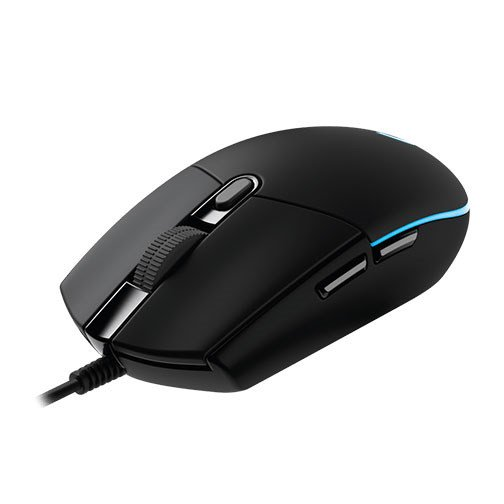
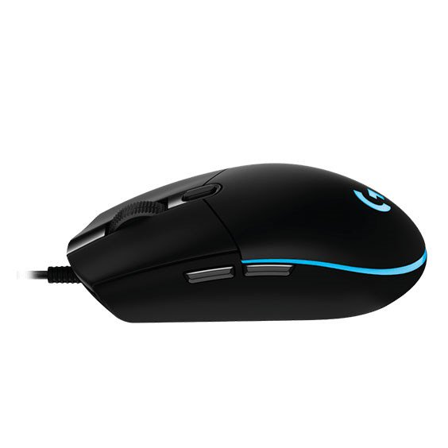
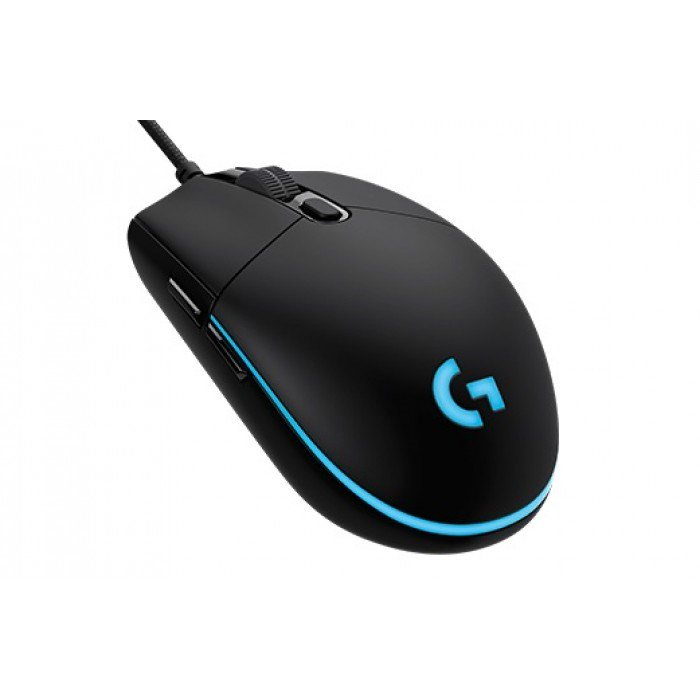

- Nhà sản xuất: Logitech
- Bảo hành: 24 tháng
- Tình trạng: Mới 100%
- Giá bán: 400,000 VNĐ
Mẫu chuột vừa mới được Logitech giới thiệu ra thị trường Việt Nam, mang tên Chuột Logitech G102 , với giá bán chỉ 490.000đ nhưng lại mang trong mình những tính năng chỉ thường xuất hiện trên những mẫu chuột cao cấp.
G102 sử dụng mắt đọc quang tới từ hãng Mercury hoàn toàn mới, được rất nhiều các tester trên thế giới đánh giá cao, với độ ổn định không thua kém nhiều so với các mắt đọc quang đỉnh cao hiện nay như 3366, 3310 và hơn hẳn các mắt đọc đang được sử dụng trên các mẫu chuột cùng phân khúc khác.
» Với kiểu thiết kế huyền thoại, G102 đảm bảo việc phù hợp với nhiều kiểu cầm chuột, cũng như tạo sự thoải mái khi sử dụng lâu dài. » Dải led phía đuôi cùng logo có thể đổi 16.8tr màu. » Tất cả các nút phụ đều có thể tùy chỉnh và lưu profile lên chuột bằng phần mềm.
Điểm ấn tượng nhất trên G102 khi mới nhìn vào đó là dải led đi vòng sau thân chuột cùng logo Logitech có thể đổi 16.8tr màu, với các chế độ tự động đổi màu hoặc set cố định một màu bất kỳ. Với một mẫu chuột trong phân khúc giá rẻ và tới từ một thương hiệu lớn như Logitech, việc không chỉ trang bị led RGB cho logo mà còn thiết kế hẳn 1 dải led cực kỳ bắt mắt như thế này giúp cho G102 gây ấn tượng hơn hẳn so với bất cứ đối thủ nào cùng phân khúc